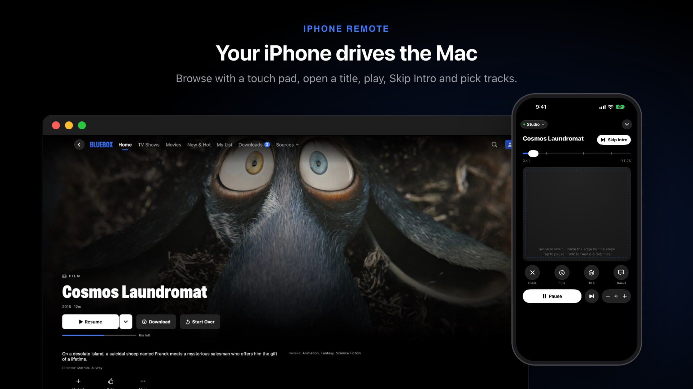
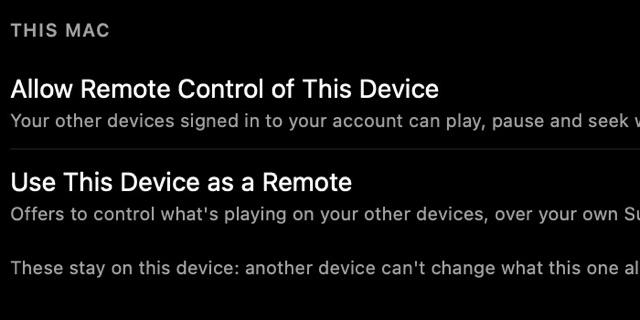
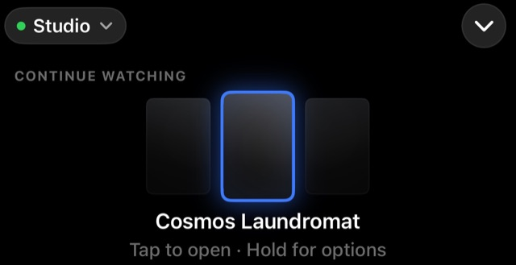
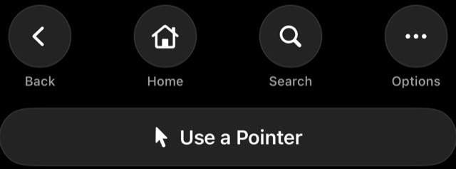

iPhone remote
Use your iPhone as a touch pad for Bluebox on your Mac: browse, play, skip and pick tracks from the couch.

Set it up#
Both devices need to be signed in to the same Bluebox account (set up sync). They don't need the same Wi-Fi.

On the Mac, turn on Settings › Privacy & Features › Allow Remote Control of This Device.- On the iPhone, tap Play On at the top and pick your Mac.

The remote opens. Open Remote in the same menu brings it back.
With your Mac chosen, Play on the iPhone plays on the Mac. Choose This iPhone to play on the phone again.
Technical details · Switches and older projects
Allow Remote Control is off by default, and only the Mac itself can turn it on. Use This Device as a Remote on the iPhone is on by default. A title you open on the iPhone opens on the Mac too.
Set up your Supabase project yourself before version 1.0.15? Run setup again (or Check Setup) so it adds the private channel policies the remote needs, then turn off Realtime › Settings › Allow public access in the Supabase dashboard. See Turn off public Realtime.
Gestures#
- SwipeMoves the highlight. A fast swipe jumps several. While playing: skip 10 seconds.
- TapPresses what's highlighted. While playing: play or pause.
- Touch and holdOpens the item's menu, on both screens.
- Two fingersSwipe to scroll the page; tap for a pointer.
Technical details · Every gesture
| Gesture | Browsing | While something plays |
|---|---|---|
| Swipe | Move the highlight. A fast swipe jumps several items; at the end of what's showing, the page scrolls on. | Left or right skips 10 seconds |
| Tap | Press what's highlighted | Play or pause |
| Hold at the edge | Keep moving | — |
| Touch and hold | Open the item's menu, on both screens | — |
| Two-finger swipe | Scroll the page, with a coast | — |
| Two-finger tap | Turn on the pointer | — |
| Swipe in from the left edge | Back | — |
| Circle round the pad's edge | — | Scrub in fine steps |
The pointer (two-finger tap, or Use a Pointer) clicks anything on the Mac, and comes on by itself on a screen with nothing to highlight. Sheets on the Mac, like a trailer or the season list, keep the touch pad off the page underneath; Back closes them. While a stream loads, the touch pad waits, so a second tap can't start it twice.
What the remote shows#

Above the touch pad: what's highlighted on the Mac, with the items either side, so you don't need to look up. On the Mac, the highlighted item has a ring.
Technical details · How the highlight behaves
There's always a highlight. After a while it dims to an outline instead of disappearing, and each new page starts on its first item, so every swipe moves and every tap presses something. Everything you could click on the Mac can be reached: the sidebar, TV Shows and Movies, More Info and My List, See All, the search field, Downloads, every Settings row and switch, and the buttons in sheets. On iPhone the remote opens full screen, so swiping down on the touch pad doesn't close it; the chevron at the top does.
While something plays#
- Drag the timeline to seek; chapters are marked.
- Skip Intro and Next Episode appear on the iPhone when the Mac offers them.
- The audio and subtitle buttons pick tracks on the Mac.
- Close Player stops playback on the Mac.
The remote shows whether it's connected. If the Mac stops answering, it says so and offers Try Again.
If it won't connect#
- “No Mac to Control”: on the Mac, check Allow Remote Control is on, Bluebox is open and you're signed in.
- Same account? Compare Settings › Account & Sync on both: same server, same username.
- Same version? Update both (Settings › About).
- Mac was asleep? Wake it and tap Try Again.
Technical details · “Remote control and instant sync are off”
That message in Account & Sync means your project is missing the private channel policies. Run Check Setup, or set up again with an access token, or run migrations/20261030000000_realtime_private.sql in the SQL editor. The remote reconnects on its own when the iPhone opens Bluebox again; commands are confirmed by the Mac and sent again if one is lost.
More in the FAQ: My iPhone can't find my Mac.